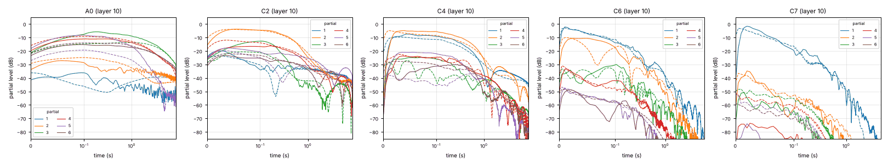

Computer keys: Z…/ (lower row) and Q…] (upper row) play from C3; ←/→ shift by an octave, Space holds the sustain pedal. For a MIDI keyboard, use Connect MIDI device below.
MIDI
Note on/off, velocity, the sustain pedal (CC 64) and all-notes-off are used. The browser asks for permission when you press the button. In Firefox that request takes the form of a small “site permission add-on”, which you need to accept.
- Web MIDI API
- …
- Secure page
- …
- Permission
- …
- Access
- not requested yet
| port | name | maker | state | connection |
|---|
If it does not work
- Firefox (version 108 or later) grants MIDI per site through an automatically generated “site permission add-on”. After pressing Connect, a prompt appears at the left of the address bar asking to add it: choose to continue and add it. If you dismissed or blocked it earlier, Firefox refuses at once (the log shows
SecurityError). Remove the old decision underabout:addons→ Site Permissions, or via the site information icon in the address bar, then press Connect again. The add-on cannot be installed in private windows, and it is disabled whendom.webmidi.enabledis false inabout:configor by an enterprise policy. - Chrome / Edge: allow “Use your MIDI devices” when asked. If you blocked it, open the site information icon in the address bar → Site settings → MIDI devices → Allow, then reload.
- Safari does not support Web MIDI.
- Access granted but no devices: plug the device in (the list updates by itself) and make sure no other program holds it exclusively. On Linux the browser uses ALSA, so the device should be listed by
aconnect -l. Some devices only appear after a browser restart. - Messages arrive but nothing sounds: press Start audio first, and check the channel filter.
Browser:
Tone
Compare with the recording
The FM model was fitted to the Salamander Grand Piano V3 samples (30 keys × 16 velocity layers). Pick a recorded key and dynamic: the FM note is rendered dry with the fitted Concert Grand tone at the matching velocity and level, then played next to the original sample. The first 6 s of each are played.

How it works
- Stiff strings. A piano string's partials are sharp:
fn = n·f0·√(1 + B·n²). B was measured on every recorded key (≈7·10⁻⁵ in the tenor up to ≈10⁻² in the top octave). The measured stretched tuning is reproduced too. - FM stacks on the partials. Each note uses up to 14 two-operator FM stacks. A stack's carrier sits on a stretched partial and its modulator runs at the local partial spacing, so the FM sidebands fall onto the neighbouring inharmonic partials. A bass note gets 80+ partials from about a dozen stacks; the stack on partial 1 uses the classic 1:1 ratio. Stacks sit on partials 1, 2, 3, 4, 6, 9, 13, 18, 25, 35, 50 and 70, with extras wherever no sideband would land in tune. Each index is capped so that sidebands beating against the true partial faster than unison strings do stay quiet. In the very stiff top octave this leaves near-pure carriers.
- Brightness that decays. Each modulation index falls from I0 towards I∞, so high partials die faster than low ones, as on a real piano. Harder strikes start with larger indices and sound brighter.
- Unison strings. Each stack's amplitude is the sum of a fast and a slow exponential decay: the piano's prompt sound and aftersound. On the lowest four partials they are rendered as the modes of the note's strings. The single-string bass (A0–E1) gets one carrier; string pairs (F1–E2) a prompt and an aftersound carrier; triples (from F2) a prompt and two aftersound carriers. They are spread by the detuning measured between the recorded strings (about 1 cent, 2.4 cents in the top octaves) and start in phase, like strings struck by one hammer. Their drift produces the beating. The Unison detune, Unison balance and Strings per note controls change it.
- Fitted, not tweaked by ear. FM spectra are Bessel functions, so the power each stack puts on each partial is known analytically. A least-squares fit adjusts amplitudes, decay times and index envelopes until the model's partial envelopes (grouped into ERB bands, like the ear) match the recording. That was done for all 30 recorded keys at 9 of the 16 velocity layers; the remaining layers and the 58 unrecorded keys are interpolated.
- The rest. Three noisy feedback-FM pairs model the hammer and soundboard: a short click, a low thump with a slow tail, and the dense resonance "halo" around treble notes. They were tuned on the recordings' bands below and between the partials, where the top octaves contain little else. Dampers stop notes on key release except in the top octave and a half. The sustain pedal, a small FDN room reverb and stereo key panning complete the instrument. The other tones (bright, mellow, upright, honky-tonk, felt) vary the fitted model physically: hammer hardness, string stiffness, unison detuning and sustain.
Source code, analysis and fitting tools: github.com/Madadog/synthprotos.